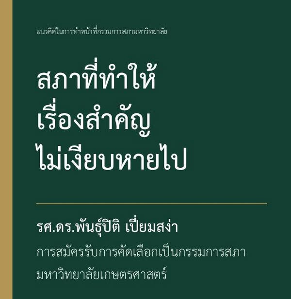

สภาที่ทำให้เรื่องสำคัญไม่เงียบหายไป
{kind=link}

ในการนำเสนอวิสัยทัศน์ในฐานะผู้สมัครรับการคัดเลือกเป็นกรรมการสภามหาวิทยาลัยเกษตรศาสตร์ซึ่งเลือกจากคณาจารย์ประจำ ผมตั้งใจพูดจากมุมของสภา ไม่ใช่จากมุมของฝ่ายบริหาร
สภาไม่ใช่ผู้บริหารรายวัน แต่ควรเป็นกลไกที่ช่วยให้การบริหารมีหลักการ มีข้อมูล และมีการติดตามผล วิสัยทัศน์ที่ผมเสนอจึงสรุปเป็นประโยคว่า “สภาที่ทำให้เรื่องสำคัญไม่เงียบหายไป”
ตั้งคำถามคือหน้าที่ ไม่ใช่การคัดค้านโดยอัตโนมัติ
กรรมการสภาควรตั้งคำถาม โดยเฉพาะเมื่อเรื่องหนึ่งมีผลต่อคนจำนวนมาก ใช้ทรัพยากรระยะยาว หรือสร้างแบบอย่างให้การตัดสินใจครั้งต่อไป แต่คำถามที่มีคุณค่าต้องตั้งอยู่บนข้อมูล หลักการ และเหตุผลที่ตรวจสอบได้ ไม่ใช่ตั้งขึ้นเพียงเพื่อแสดงความเห็นต่าง
คำถามที่ดีช่วยเปิดให้เห็นสมมติฐาน ทางเลือก ความเสี่ยง ผู้ได้รับผลกระทบ และเกณฑ์วัดความสำเร็จ ทำให้ข้อเสนอที่ดีแข็งแรงขึ้น และทำให้ข้อเสนอที่ยังไม่พร้อมได้รับการปรับปรุงก่อนสร้างภาระระยะยาว
สภาต้องเห็นทั้งหลักการ ทรัพยากร และอนาคต
ประเด็นที่ผมให้ความสำคัญมีสามด้านซึ่งแยกจากกันไม่ได้ ได้แก่ ธรรมาภิบาล การบริหารและจัดสรรทรัพยากรเพื่อสร้างคุณค่าที่แท้จริง และการปรับตัวของมหาวิทยาลัยให้ทันต่อการเปลี่ยนแปลงโดยไม่สูญเสียคุณค่าทางวิชาการ
ทรัพยากรทุกก้อนสะท้อนการจัดลำดับความสำคัญ สภาจึงไม่ควรพิจารณาเพียงว่างบประมาณถูกต้องตามหมวดหรือไม่ แต่ควรถามด้วยว่าการใช้ทรัพยากรนั้นสร้างผลลัพธ์อะไร ใครได้รับประโยชน์ มีต้นทุนแฝงใด และยังสอดคล้องกับพันธกิจของมหาวิทยาลัยหรือไม่
ธรรมาภิบาลต้องมองเห็นได้ในกระบวนการจริง
มหาวิทยาลัยที่ดีควรตัดสินใจด้วยข้อมูล โปร่งใส ตรวจสอบได้ และรับผิดชอบต่ออนาคต ธรรมาภิบาลจึงไม่ควรอยู่เฉพาะในถ้อยคำของเอกสาร แต่ต้องปรากฏในกระบวนการสรรหา ประเมิน แต่งตั้ง จัดสรรทรัพยากร และติดตามผล
ความโปร่งใสไม่ได้หมายถึงเปิดเผยทุกข้อมูลโดยไม่คำนึงถึงสิทธิหรือความลับ แต่หมายถึงการมีหลักเกณฑ์ที่ชัด อธิบายเหตุผลได้ จัดการผลประโยชน์ทับซ้อน และมีร่องรอยที่เพียงพอให้ผู้มีหน้าที่ตรวจสอบสามารถทำงานได้จริง
เสียงที่แตกต่างต้องมีพื้นที่ และเหตุผลต้องมีน้ำหนัก
กรรมการไม่จำเป็นต้องเห็นด้วยกันทุกเรื่อง ความเห็นที่ต่างกันช่วยให้สภามองเห็นด้านที่อาจถูกละเลย หากทุกฝ่ายสามารถแสดงข้อมูล เหตุผล และข้อกังวลโดยไม่ถูกลดทอนให้เป็นเรื่องของฝ่ายหรือบุคคล
เป้าหมายไม่ใช่ทำให้เสียงของตนชนะทุกครั้ง แต่ทำให้เหตุผลและข้อมูลมีน้ำหนักจริงในกระบวนการตัดสินใจ และทำให้มติที่เกิดขึ้นตอบคำถามสำคัญได้มากพอว่าตัดสินใจบนฐานใด
“รับทราบ” ต้องตามด้วยเจ้าภาพ กำหนดเวลา และผลที่ตรวจได้
เรื่องสำคัญจำนวนมากไม่ได้หายไปเพราะไม่มีใครพูด แต่หายไปหลังถูกบันทึกว่า “รับทราบ” โดยไม่มีผู้รับผิดชอบ ไม่มีกรอบเวลา และไม่มีการกลับมาติดตาม สภาที่มีประสิทธิผลต้องแยกให้ออกว่าเรื่องใดเพียงรับข้อมูล และเรื่องใดต้องมีการดำเนินการต่อ
การติดตามไม่ใช่การลงไปบริหารแทนฝ่ายบริหาร แต่คือการทำหน้าที่กำกับ: ระบุว่าคาดหวังผลลัพธ์อะไร จะรายงานกลับเมื่อใด ใช้หลักฐานใด และหากไม่เป็นไปตามแผน ใครต้องอธิบายเหตุผลและเสนอทางแก้
ทำให้เรื่องสำคัญเดินทางไปจนถึงผลลัพธ์
สภาที่ดีจึงไม่ใช่สภาที่ประชุมเรื่องจำนวนมากที่สุด แต่เป็นสภาที่เลือกเห็นเรื่องสำคัญ ตั้งคำถามได้ตรงจุด ตัดสินใจบนหลักฐาน และติดตามจนรู้ว่าสิ่งที่อนุมัติหรือเสนอแนะสร้างผลอย่างไร
บทบาทนี้ต้องอาศัยทั้งความกล้าตั้งคำถาม ความพร้อมรับฟังเหตุผลที่ต่าง และวินัยในการกลับมาติดตาม เพราะความรับผิดชอบของสภาไม่ได้จบลงเมื่อสิ้นวาระประชุม แต่จบเมื่อเรื่องสำคัญได้รับการดูแลอย่างสมเหตุสมผลและตรวจสอบได้